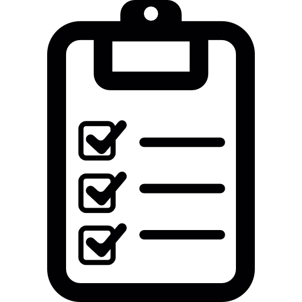
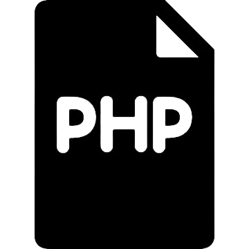
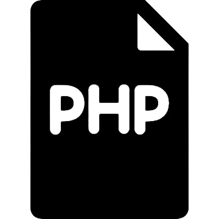

Laiz Borges
Desenvolvedora Web


"Lembre-se que as pessoas podem tirar tudo de você, menos o seu conhecimento."

Desenvolvedora Web
"Lembre-se que as pessoas podem tirar tudo de você, menos o seu conhecimento."
Eu sou Laiz Borges, uma jovem negra de 17 anos que está construindo uma carreira na programação. Em setembro de 2023 ingressei no curso de desenvolvimento Web do Instituto da Oportunidade Social (IOS). Desde então venho explorando o vasto mundo da tecnologia e me redescobrindo a cada dia. Sou uma pessoa apaixonada por aprender, gosto de estar sempre descobrindo coisas novas, tanto na tecnologia quanto fora. Aos poucos estou desenvolvendo minhas habilidades técnicas em programação e ficando cada vez melhor. Espero conquistar cada vez mais na tecnologia, aprender e também ensinar. Ir construindo meu nome e uma grande carreira.
Comunicação
Liderança
Trabalho em equipe 
Organização 
Produtividade
Pensamento Crítico


 


Inciei na programação em setembro de 2023 sem saber muita coisa. Aos poucos fui me desenvolvendo e meus projetos são a prova viva disso, a cada projeto tento me superar e dar o melhor de mim para ficar cada vez melhor. Cada projeto meu tem um pedaço de mim, do meu tempo e esforço. Acredito que a Eu de 2023 que não sabia nada de programação teria orgulho da Eu de hoje e de como evolui e continuarei me dedicando para evoluir mais.